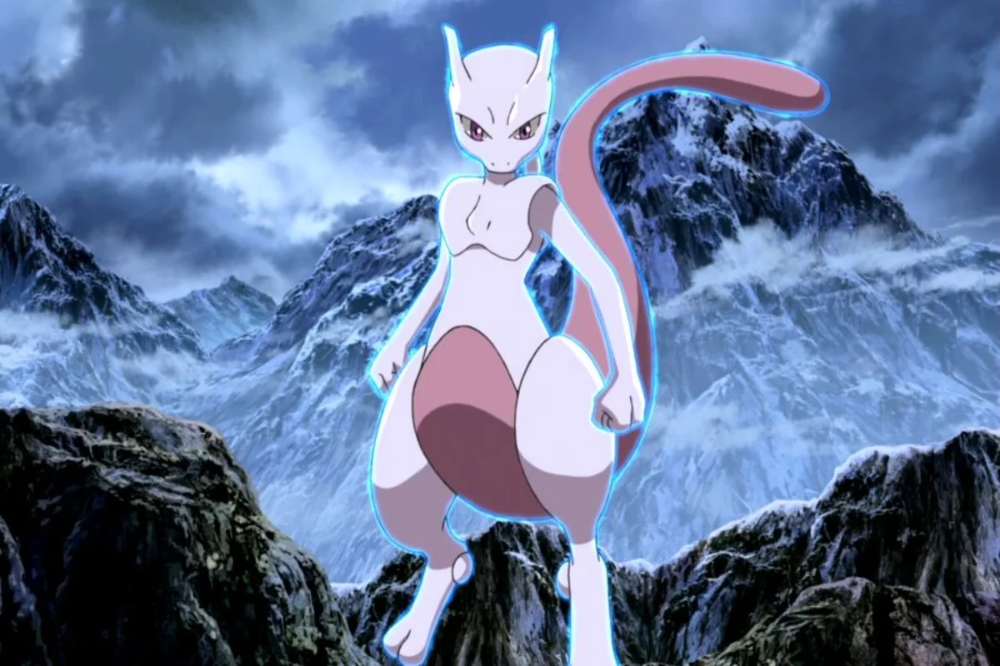

¿Pokemon esta ambientado en un mundo postguerra?
¿Alguna vez se preguntaron por qué no hay padres en los juegos originales de Pokémon? No hay apenas ningún hombre adulto, más allá de los entrenadores Pokémon más veteranos. Uno de ellos es el Teniente Surge, quien nos cuenta que un Pokémon eléctrico le salvó "durante la guerra". Esa línea de texto fue la chispa que hizo aparecer la teoría de que una guerra había acabado con una generación completa de adultos.
Sin embargo, salvo las palabras de Lt. Surge, no hay demasiados datos sobre la Gran Guerra Pokémon o Guerra de Kanto, por lo que tampoco se conocen exactamente cuáles habrían sido los motivos o el detonante que habría provocado este enfrentamiento entre Kanto y otro territorio. Estas son las tres posibilidades que se manejan.
Guerra civil en Kanto
La primera de las opciones pasaría por establecer dos bandos enfrentados dentro del propio Kanto por motivos que se desconocen. Probablemente Lt. Surge habría sido enviado desde la región de Teselia para apoyar a una de las partes, probablemente a la que favoreciese más los intereses de Teselia en Kanto.
Guerra de Kanto contra Johto
Otra posibilidad pasa por considerar una posible enemistad entre Kanto y Johto cuyo origen pudiera ser de causa territorial, tratando de expandir su dominio más allá de sus fronteras. Considerando que son regiones vecinas, no sería de extrañar que un conflicto así pudiese haber tenido lugar en el pasado. Si tenemos en cuenta esta teoría, Lt. Surge habría sido enviado a Kanto para ayudar a esta región a alzarse con la victoria.
Guerra de Kanto contra Teselia
La última de las opciones tendría sentido si tenemos en cuenta que Kanto representa un territorio japonés y Teselia uno americano. Si hacemos memoria, nos daremos cuenta de que Japón y E.E.U.U. tuvieron un dilatado conflicto bélico durante la Segunda Guerra Mundial.
De ser así, Lt. Surge habría sido enviado a Kanto para participar en el conflicto y se habría quedado porque traicionó a su patria a cambio de ser Líder de Gimnasio, porque no se pudo demostrar que hubiera cometido crímenes de guerra y dieron el puesto del anterior Líder (probablemente muerto) a la persona más cualificada (Surge) o, simplemente, porque Teselia ganó la guerra y obligó a Kanto a aceptar a Surge como un nuevo Líder.